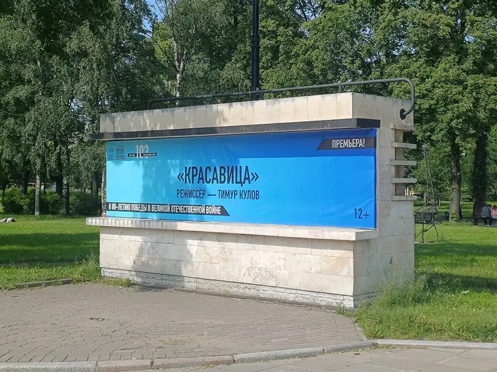
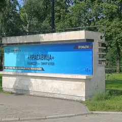

Подборку собрали 20 октября, прошедшие события скрыты. Свежая афиша — на главной

Фото: MilanSPb, CC BY-SA 4.0 · Wikimedia Commons
Театр · Центр
ТЮЗ им. Брянцева
Большой театр на Пионерской площади, где для взрослых идут одни из самых обсуждаемых спектаклей города.
- ₽₽ · 1 500–3 000 ₽ на человека
- Новое в каталоге
- 1 событие в афише
Позвать сюда: ТЮЗ им. БрянцеваОткрыть в каталоге: ТЮЗ им. БрянцеваМаршрут до места: ТЮЗ им. Брянцева
Адрес и детали
- Адрес
- Пионерская площадь, 1
Открыть на Яндекс Картах (в новой вкладке) - Метро
- м. Звенигородская
- Район
- Центр
- Цена
- 1 500–3 000 ₽ на человека
- Телефон
- +7 (812) 712-41-02
- Проверено
- работает — проверили в октябре 2026
Афиша площадки 1

ТЮЗ им. Брянцева, Большая сцена · м. Звенигородская · 1 200–15 000 ₽ · 16+
Шварц в музыкальной версии Алексея Франдетти — для тех, кто вырос на фильме Захарова. 27 ноября в 19:00, а 31 декабря новогодний показ в 18:00.
Подробнее: Обыкновенное чудоПозвать сюда: Обыкновенное чудоБилеты : Обыкновенное чудо (страница с билетами, откроется в новой вкладке)
Фото: MilanSPb, CC BY-SA 4.0 · Wikimedia Commons
Похожие рядом


Что ещё рядом
Как позвать
- Выбери план, место или событие — в карточке адрес, цены и маршрут в Яндекс Картах.
- Нажми «Позвать сюда» — соберётся приглашение-игра для свидания или голосование для компании.
- Отправь ссылку в любой мессенджер: тебе ответят, а компания отметит, куда и когда может. Бесплатно и без регистрации.